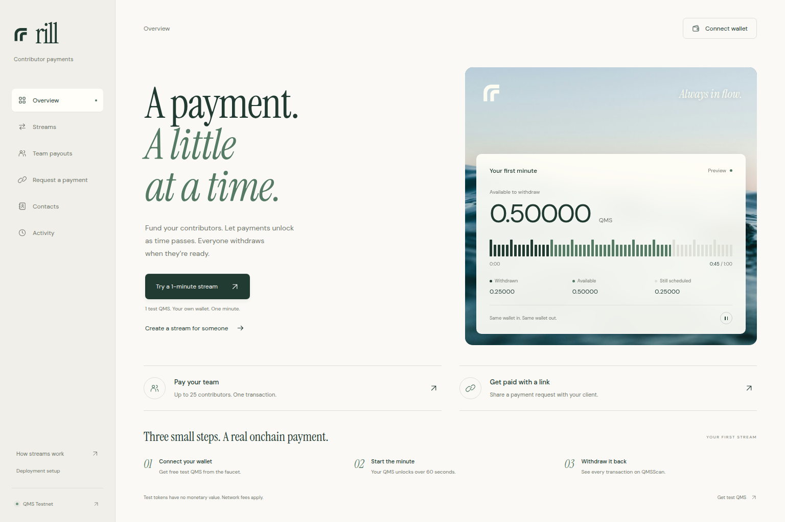
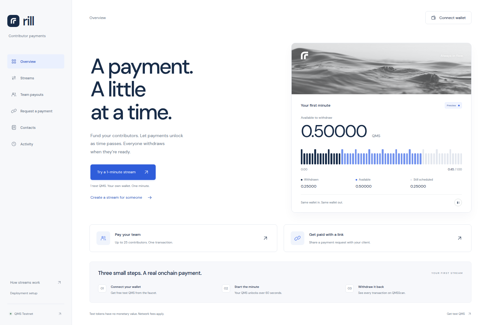
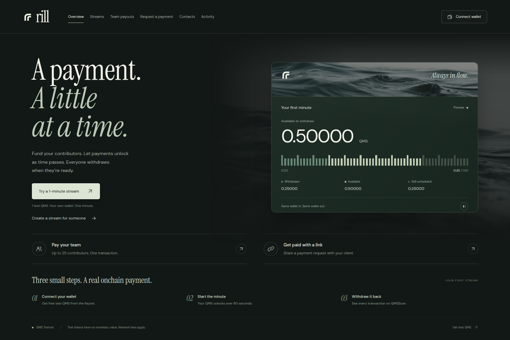

AWarm editorial
Ivory, forest green, expressive typography, and water imagery.


Proposed motion: gentle entrances, a flowing preview timeline, subtle image movement, and soft press feedback.
BPrecision fintech
Cool white, navy, sharper typography, and precise controls.


Proposed motion: fast transitions, precise progress updates, and crisp navigation and control feedback.
CDark luxury
Deep charcoal, silver-green accents, and atmospheric depth.


Proposed motion: atmospheric image movement, restrained light effects, and smooth panel entrances.